| Docker Tooling Perspective | ||
|---|---|---|
|
|
|
|
| Docker Tooling User Guide | Updating This Document | |
A new perspective known as the Docker Tooling Perspective is added.

This perspective brings up three new views added:
In addition, the Docker Tooling Perspective adds the Docker Image Hierarchy View, Console View, the Terminal View, and the Properties View.
The Console View is used to display logs of stdout/stderr output from Containers and in some instances, allow input to stdin. The Properties View allows clicking on various elements such as Connections, Images, and Containers and getting detailed info not readily shown in the various views mentioned above.
For example, clicking on a connection shows the following:

The first view is a tree view of the various connections to Docker daemons. A connection to a Docker daemon is needed before any management of Docker Images or Containers can be performed. On initial start-up, Docker Tooling will attempt to find an existing connection. New logic has been added to support connection settings providers which provide default settings for the docker daemon. By default, there are providers for the default Linux unix socket and for a default tcp server: 127.0.0.1:2375, otherwise, a search will be made for special Docker environment variables: DOCKER_HOST and DOCKER_CERT_PATH . If these cannot be found, a script will be run to try and export the values so the Docker Tooling can find them. If no existing connection can be found using the automatic methods, the Docker Explorer View will display a message regarding this. Note that the Docker Images View and Docker Containers View are controlled by the connection selected in the Docker Explorer View. They will also note there are no connections established yet.

Clicking on the message will bring up the New Connection Wizard.

The wizard allows the user to select a name for the connection and specify its location. For Linux users that have a local daemon running, this will be defaulted to the Unix socket: unix:///var/run/docker.sock. If a custom connection is desired, clicking the "Use custom connection settings" checkbox will allow the user to fill in either a unix socket address or a TCP address. On Mac or Windows systems, a TCP address will be required. Authentication may be required in which case the user should click on the "Enable authentication" check-box and fill in a path to the authentication files to use.
Once the data is filled, the user can test the connection by clicking on the "Test Connection" button or simply hit the "Finish" button.
More than one connection can be specified. To add more connections, click on the
 icon
to bring up the wizard again. To delete a connection, click on the
icon
to bring up the wizard again. To delete a connection, click on the
 icon. To
refresh the tree view, click on the
icon. To
refresh the tree view, click on the
 icon. Refreshing may be required if the user
has performed management outside of Eclipse using the docker command.
icon. Refreshing may be required if the user
has performed management outside of Eclipse using the docker command.
The Explorer View shows a tree view with the main nodes being the connections. Each connection opens up to reveal Images and
Containers nodes which have children nodes for Images and Containers that the connection knows about. If a connection gets dropped
(e.g. the daemon is stopped), it will be marked in view using a gray disabled icon. To enable the connection,
use the
 icon on the toolbar to re-enable the connection. If the connection
can be enabled, it will change color to denote this.
icon on the toolbar to re-enable the connection. If the connection
can be enabled, it will change color to denote this.
A connection can also be edited after it is created. Simply select the connection in the Docker Explorer View and right-click for the context menu to select "Edit Connection...". This will bring up the Edit Connection Wizard:

Filtering is provided for the Docker Explorer View. Simply click on the generic Menu options (down arrow) and click on "Customize View...". This will bring up the following dialog:

From here one can filter out:
For Connections, Containers, and Images in the Docker Explorer View, right-clicking on a selection brings up the context menu with tasks to perform on the selected item(s). Actions applying to multiple items are only enabled if the action can be performed on all selected items.
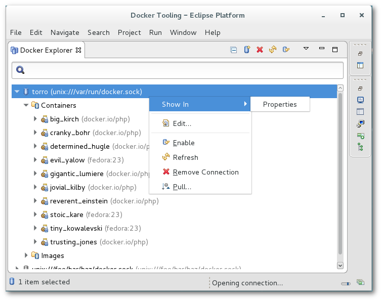
For Connections, one can:
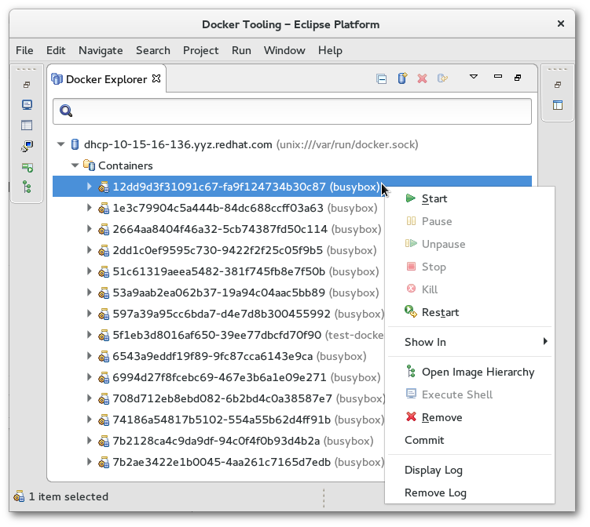
For Containers, one can:
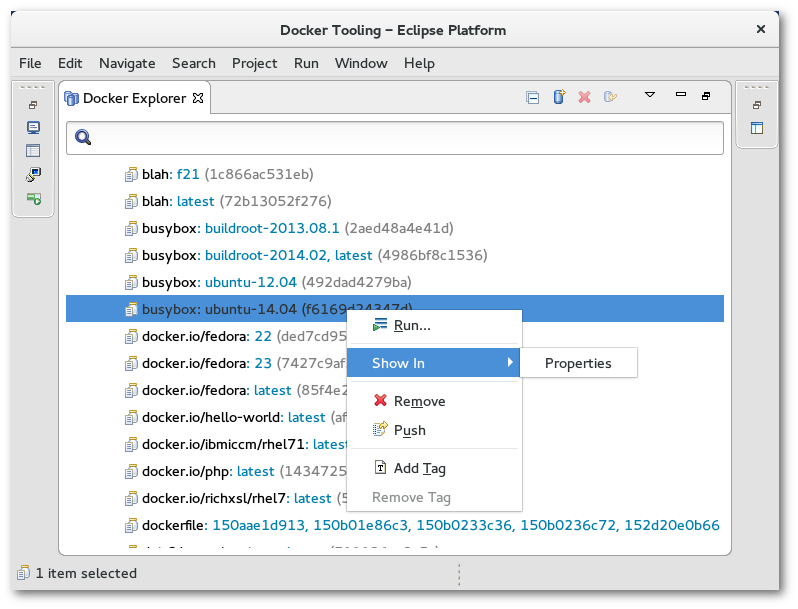
For Images, one can:
The Docker Images View is used to manage Docker Images. By default, the View shows only top-level Images that have at least one repo:tag name. The menu options allows you to see all Images by clicking the "Show all images" check-box.

The connection used for the Docker Images View is determined by the latest selection in the Docker Explorer View. Whatever was last selected in the Docker Explorer View is queried for its connection and this is used for the Docker Images View. If there is only one connection, it is defaulted.
There are a number of toolbar actions supported in the Docker Images View:
 -
pull an Image from the Repository
-
pull an Image from the Repository
 -
push an Image to the Repository
-
push an Image to the Repository
 -
create a Container from an Image
-
create a Container from an Image
 -
build an Image from a Dockerfile
-
build an Image from a Dockerfile
 -
tag an Image
-
tag an Image
 - delete one or more Images (requires confirmation)
- delete one or more Images (requires confirmation)
There are also context menu actions supported:
-
Run an Image and create a Container
-
tag an Image (same as the toolbar tag image action)
 -
remove a tag from an Image with multiple repo tags
-
remove a tag from an Image with multiple repo tags
 -
Open Image Hierarchy
-
Open Image Hierarchy
The text entry below the Connection name is used to search/filter the contents of the list. Anything typed in the filter text widget is used to match items in the list (any column) and any row without a match is excluded.
Pulling a Docker Image consists of requesting a repo tag or repository specification from a registry. Specifying a repository with no tag will pull the Image with tag: latest from that repo (for example: fedora will pull fedora:latest).
The pull Wizard is used to specify the repository or repo:tag specification and the registry account to use.

By default, the Docker Hub registry will be used, however, a user may specify an additional private registry if desired. Additional registries can be added by clicking on Add a registry account... or going to Windows -> Preferences -> Docker -> Registry Accounts.
The user can either fill in the complete name of the image to download or a search can be performed using the Search button. This brings up the Search Image Wizard.
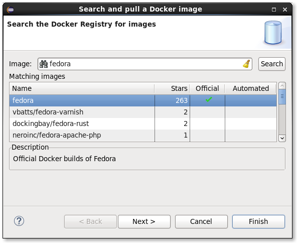
Hitting the Search button will cause a search to list all repositories with the given search term. Hitting Next... shows the various tags that can be selected.
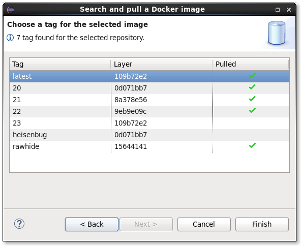
A search is performed only on the official Docker registry. If a user needs to download an image from a private registry, then the full specification of the image, including registry, needs to be made manually in the initial Wizard text box.
Once complete, the user hits the "Finish" button or hits "Cancel" to abort.
The pull of an Image may take a long time. This is because an Image may use several intermediate Images each of which may be several bytes. The Linux Tools Docker Tooling provides status jobs to monitor the download of the various Images and has an overall job created to monitor the status of the pull itself. When complete, refreshing of the Docker Explorer View and Docker Images View is automatic.
Pushing a Docker Image consists of specifying an existing repo tag to push. By default, Images will be pushed to the default Docker registry, but if a tag contains a registry specifier in addition to repo:tag, it will be pushed to the specified registry. To specify an external or local registry, use the Tag Image function to add a new tag to an existing Image which has the registry specifier and then push that tag.
The latest version of the Push Image Wizard allows one to specify a registry/account that has been added via Window -> Preferences -> Docker -> Registry Accounts. This is needed when authorization is required by the registry for the specified repo. Using the aforementioned tag method assumes no authorization required.
As well, a new tag can be specified at the time of the push. This new tag is not retained unless specified in the options.
Options are available to:

Like a pull of an Image, pushing an Image may take a long time. The Linux Tools Docker Tooling provides status jobs for the various Images being pushed (may include needed intermediate Images) and an overall job is created to monitor the status of the push job.
The Run Image Wizard is used to create a Container based on an Image.
The first page of the Wizard allows a number of common settings:

The second page of the Wizard also has a number of needed settings:

The third page of the Wizard (as of Docker Tools 2.3.0) adds the ability to set the network type:
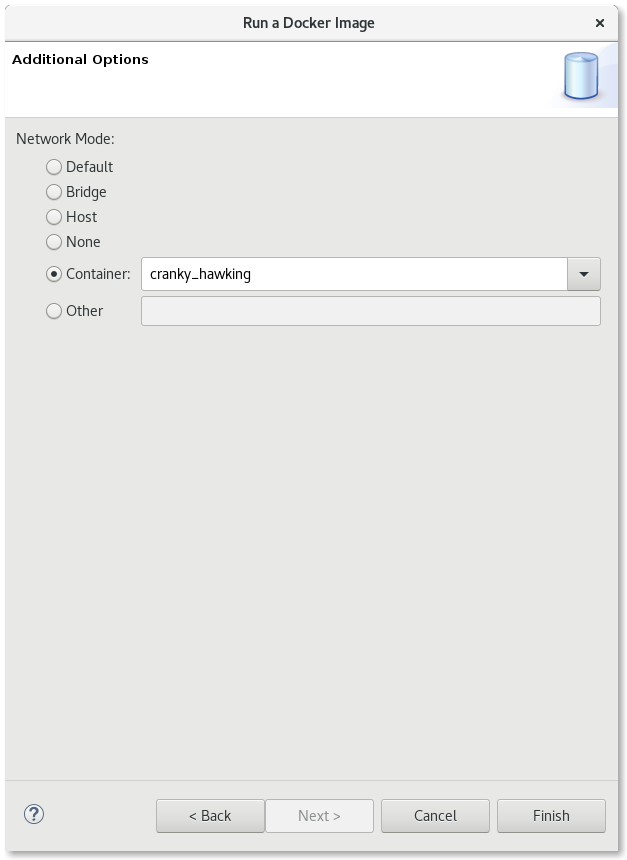
As of Docker Tools 1.2.0, the Run Image settings are stored in a Run Launch Configuration. You can optionally use the Run Configurations Dialog (Run -> Run Configurations...) to edit or create a Run Image configuration. The same data that appears in the Run Image Wizard is broken up into launch configuration tabs:
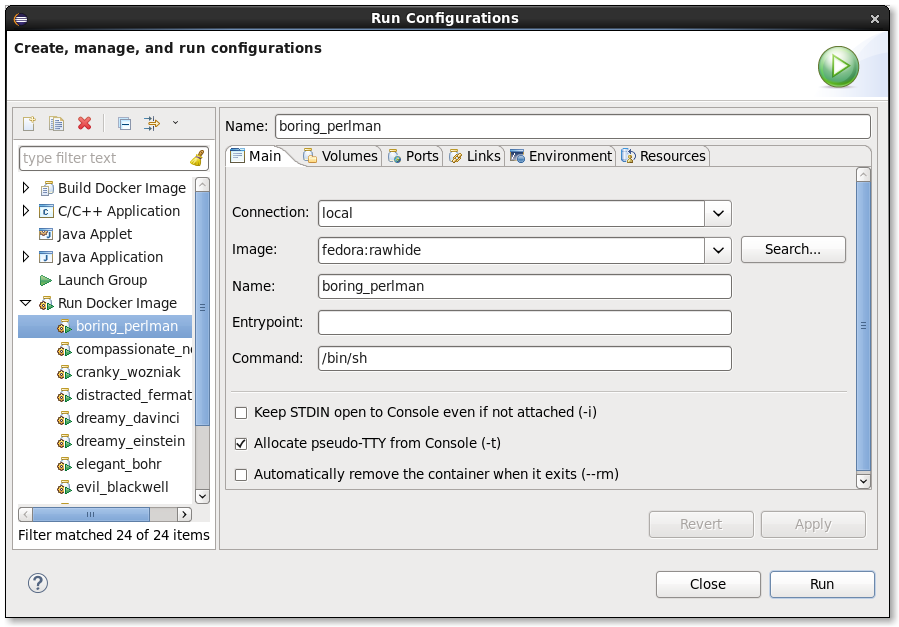
Building an Image takes an existing Image and modifies it to create a new Image. Typically this involves installing new packages. The specification of the new Docker Image is done via a special file which is always named: "Dockerfile". Clicking on the Build Image icon starts the Build Image Wizard:

There are two fields that need to be filled in:
The directory can be specified using the "Browse" button. Once a valid existing directory is specified, the "Edit" button will be enabled, allowing creation and modification of the Dockerfile using a basic editor dialog.
When the Dockerfile is considered complete, hitting the "Finish" button will start the Image build action. When the build is complete, the Docker Images View will be refreshed automatically.

The Dockerfile editor is a specialized text editor for Dockerfiles that was added to the Neon release. The editor supports completion and offers help on the basic Dockerfile constructs. Completion occurs using the CTRL + space sequence as in any other text editor. Reverting fixes and saving are also supported plus full colorization. The editor can be brought up from the Build Image Wizard or by double-clicking on a Dockerfile file in an Eclipse View such as the Project Explorer.
A Dockerfile is used to specify how to build the new Docker Image. The file contains a set of commands used to build the Image:
For more details, see the official Dockerfile reference
A Dockerfile can also be run by right-clicking on it in an Eclipse project and choosing Run as -> Docker Image Build. For the first time the file is built, you will get the following dialog:

Here, the connection and the repository name for the new image can be supplied. An image created without a name will default to be: dockerfile:xxxxxxxxxxxx where xxxxxxxxxxx is a unique hex value.
After building, a Run configuration will be created that can be inspected, modified, or run using the Run->Run Configurations... menu option.

Note there are additional options in the configuration that can be specified for the image build that are not available by right-clicking on the Dockerfile. A new Run configuration can be created from the Run Configurations dialog by double-clicking on the Build Docker Image category.
The Tag Image dialog can be brought up directly from the Docker Images View toolbar or using the context menu by right-clicking on an Image.

The dialog is simple and asks for a new tag to add to the Image. The tag should be of one of two forms:
Adding a tag with a registry is the way to push existing Images to local or external registries. By default, Docker pushes Images to its default registry. When pushing to the default registry, a username needs to be specified in the repository specifier because write privileges are prohibited for the base Images (e.g. fedora:20 is the official Docker Image for F20 whereas a user may have a user/fedora:20 copy they have modified).

The Remove Tag dialog allows the user to remove a tag from an existing Image. This may be done to rename a tag or to keep the number of tags manageable. The Remove Tag menu item is only enabled after selecting an existing Image in the Docker Images View that has multiple tags. The dialog presents the list of possible tags to remove in a drop-down list.
The Docker Containers View is used to manage Docker Containers. By default only running Containers are shown. To see all Containers, click on the menu options and click the "Show all containers" check-box.

The connection used for the Docker Containers View is determined by the latest selection in the Docker Explorer View. Whatever was last selected in the Docker Explorer View is queried for its connection and this is used for the Docker Containers View. If there is only one connection, it is defaulted.
The text entry below the Connection name is used to search/filter the contents of the list. Anything typed in the filter text widget is used to match items in the list (any column) and any row without a match is excluded.
There are a number of toolbar actions supported in the Docker Containers View:
 - start a stopped Container
- start a stopped Container
 - pause a running Container
- pause a running Container
 - continue running a paused Container
- continue running a paused Container
 - stop a running Container
- stop a running Container
 - kill a running Container
- kill a running Container
 - restart a Container
- restart a Container
 - delete a stopped Container
- delete a stopped Container
 - refresh Containers list
- refresh Containers list
It should be noted that the various actions above are enabled/disabled based on the state of the current selected Container(s) in the View. Multiple Containers can be selected for an action so long as all Containers meet the enablement requirements.
The following context menu actions are supported:
 Commit Container -
commit all changes of a selected Container into a new Image
Restart - restart a Container (will wait to stop a running Container, then will kill it before starting again)
Commit Container -
commit all changes of a selected Container into a new Image
Restart - restart a Container (will wait to stop a running Container, then will kill it before starting again)
 Display Log -
display the stdout/stderr logs of a selected Container in the Console View
Display Log -
display the stdout/stderr logs of a selected Container in the Console View
 Remove Log - remove the stdout/stderr logs of a selected Container from the Console View
Open Image Hierarchy -
Open Image Hierarchy for Container
Remove Log - remove the stdout/stderr logs of a selected Container from the Console View
Open Image Hierarchy -
Open Image Hierarchy for Container
 Copy from Container -
copy files from Container to Host
Copy from Container -
copy files from Container to Host
 Copy to Container -
copy files from Host to Container
Copy to Container -
copy files from Host to Container
 Execute Shell -
execute a shell in running Container
Execute Shell -
execute a shell in running Container
The list of Containers can also be filtered by Container labels. Container labels are added to a Container during a Run Image invocation. The labels are useful for filtering purposes (e.g. to find all the Containers created for a particular purpose and then delete them at once).
To filter by labels, check the Filter by labels check-box in the Docker Containers View view menu. In addition, some labels need to be specified to filter for. From the view menu, click on the Configure filter labels... menu item. This will bring up the following dialog:
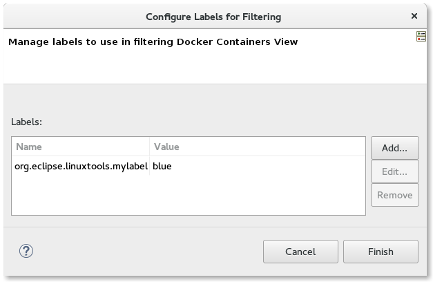
Labels can be added, edited, or removed from the list.
Containers that match the labels given in the filter are shown in the Docker Containers View. A label specified without a value means simply to match that the label is present for the Container. If a value is specified, it must match the value in the Container for it to be shown in the view. If no labels are specified to filter against, all Containers that would normally show in the Docker Containers View are displayed.
The Commit Container dialog is simple.

The user is required to enter:
The Display Log action displays the stdout/stderr output for a Container in either the Console View or the Terminal View, depending on whether the Container specified use of a TTY.
For Containers that run with the TTY flag enabled, the output goes to the Terminal View:
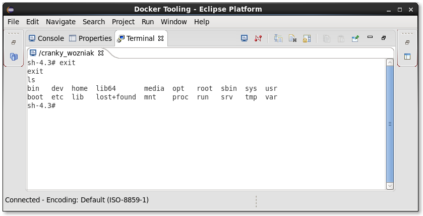
For Containers that run without a TTY, the output is shown in the Console View:

In the example above, each entry in the log is preceded by a time-stamp. This can be controlled using Window->Preferences->Docker->Logging.

From there, one can control:
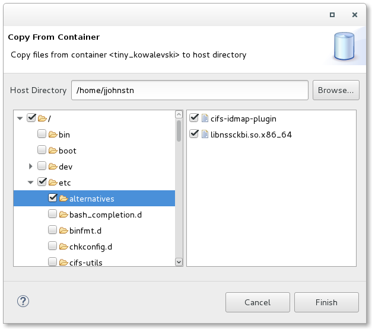
The Copy from Container dialog allows you to specify files and folders from the Container's file system and copy them to a selected directory on the Host. If the Container is running, a Container file browser will be available for file and folder selection and multiple files and folders may be specified. Specifying a folder will copy the folder and its contents.
If the Container is stopped, you must specify the file or folder manually in the given text entry widget.
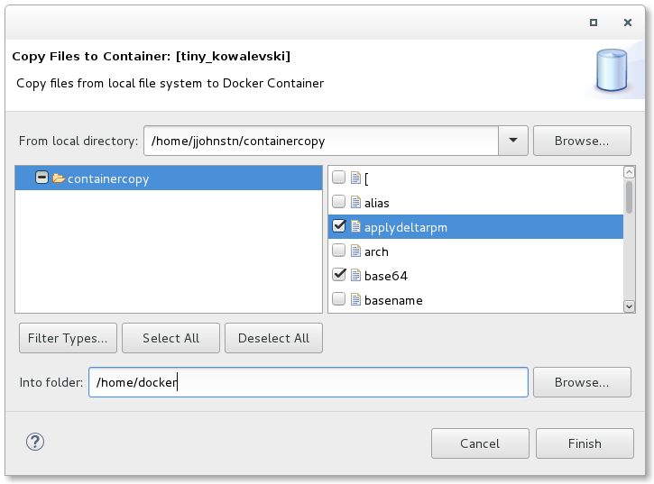
The Copy to Container dialog allows you to specify files and folders from the Host file system to a selected directory in the Container's file system. If the Container is running, a Container directory browser will be available for selecting the target folder. Otherwise, a text entry will be made available for specifying the directory manually.
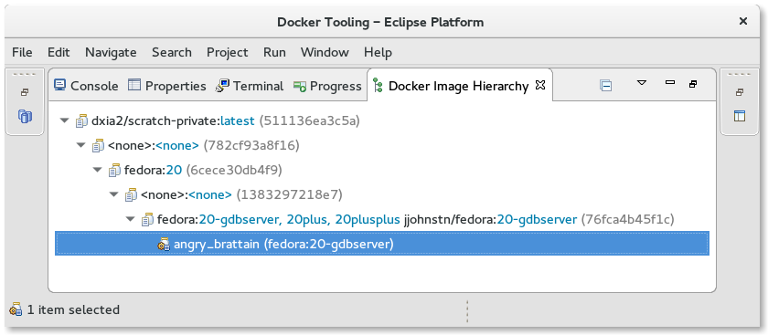
The Image Hierarchy View displays a hierarchy of Images starting at a particular Image or Container back to its earliest parent Image. A parent Image is one that is used in a Build Image action. In the case where the Image Hierarchy is started from an Image, all of its existing Containers are shown as children. In the case where the Image Hierarchy is started from a Container, just the selected Container is shown under the Image used to create it.
Context menu actions are available for the Docker Images and Docker Containers in the View. These match those found in the Docker Explorer View context menu.
The Properties View will respond to selections in the four Docker Tooling Views: Docker Explorer View, Docker Images View, Docker Containers View, and the Docker Image Hierarchy View. The data shown will depend on what is being selected:
For a Docker Image and Docker Container, there are two forms of data:

Support has been added for docker-compose.
Users can select a docker-compose.yml file and start Docker Compose from the context menu, using the Run > Docker Compose launcher shortcut.
The Docker Compose process displays its logs (with support for text coloring based on ANSI escape codes) and provides a stop button to stop the underlying process. The location of the docker-compose command is specified using the docker compose preferences page location using Window->Preferences->Docker->Docker Compose.

As with the support for building and running containers, a launch configuration is created after the first call to Docker Compose on the selected docker-compose.yml file.
There are a number of Docker preferences found in the Window->Preferences->Docker section.

This page contains settings for:
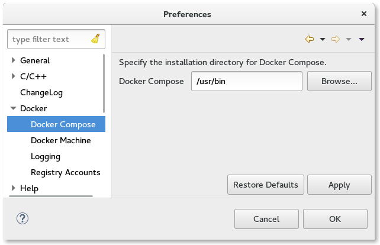
Here you can specify the location where the docker-compose binary is installed. By default, the location on Linux and Mac will be: /usr/local/bin while on Windows, it will be: C:\\Program Files\\Docker Toolbox.

Here a user can specify the location of the docker machine command as well as the VM location it uses. A warning will be issue if the docker-machine command cannot be found at the given location. This option is not necessary on Linux machines, but is useful for Mac and Windows users using docker-machine to bring up the docker daemon.

This contains settings for logging a Container. These include:
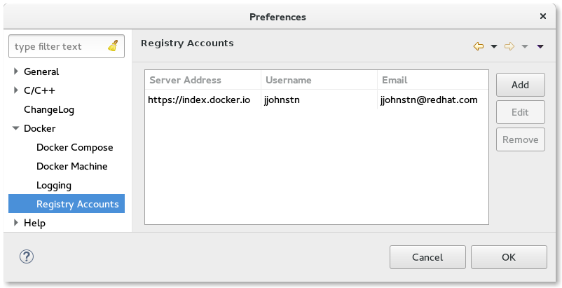
Here a user may specify registry account information. By default, a user has access to the default docker hub registry using no username or password. To be able to push images to the docker hub registry, a user would need a registered username and the accompanying password. This page can also used to specify non-default registries such as a private registry.
The page supports adding, editing, and removing accounts.
Once a registry account entry is added, it may be used for pushing and pulling images. See the push image and pull image sections for details.
|
|

|
|
| Docker Tooling User Guide | Updating This Document |